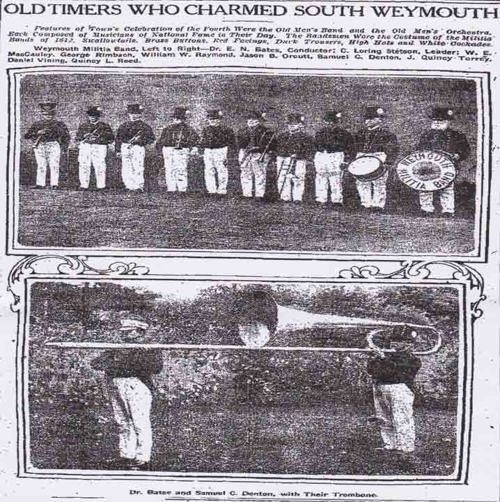
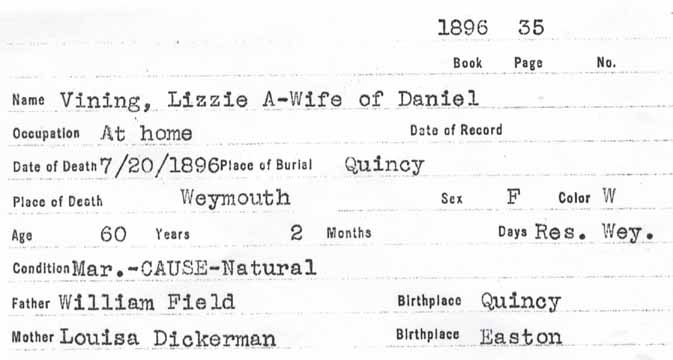
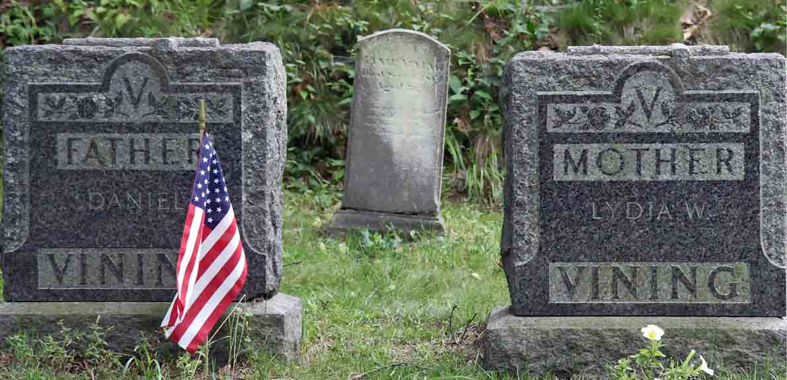
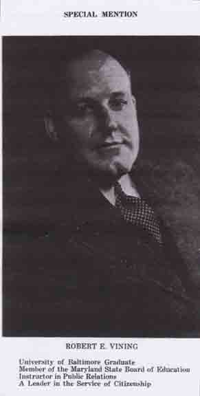
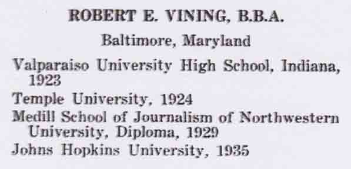
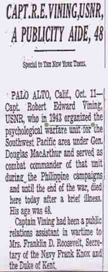

Census Data
| 1860 | 1870 | 1880 | 1890 | 1900 | 1910 | 1920 | 1930 | |
| Daniel Vining | ? | 28 | 42 | ? | 60 | 71 | dead | |
| Elizabeth Ann (Field) Vining | ? | 34 | 44 | ? | dead | |||
| Lydia (Whelpdale) Vining | 35 | 50 | ? | |||||
| Elmer Howard Vining | ? | 11 | 22 | married (and living in separate household?) | ||||
| Robert Edward Vining | 8 | 18 | [see note below] |


Death Data
Death record for Elizabeth Ann (Field) Vining:

Research Opportunity
In the 1860 census, Daniel was reported to be living in the household of his parents. In the 1870 census, he was reported to be married and have an 11-year-old son (Elmer, thought to have been born on 13 February 1858). If Elmer was 11 years old in 1870, where were he and his mother in 1860?

